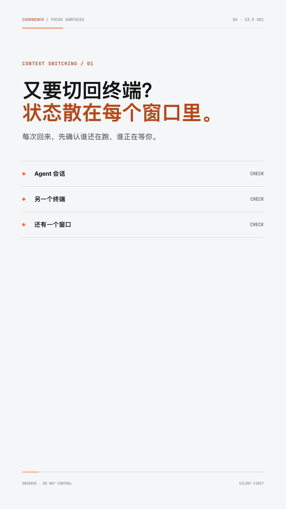
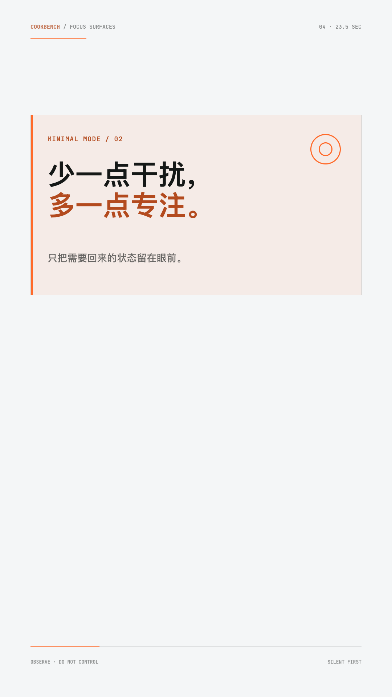
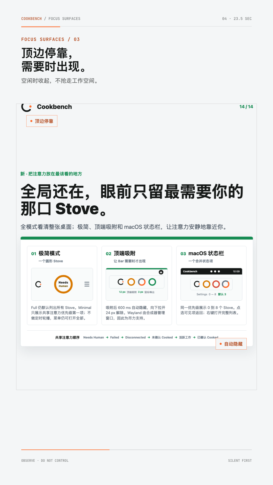
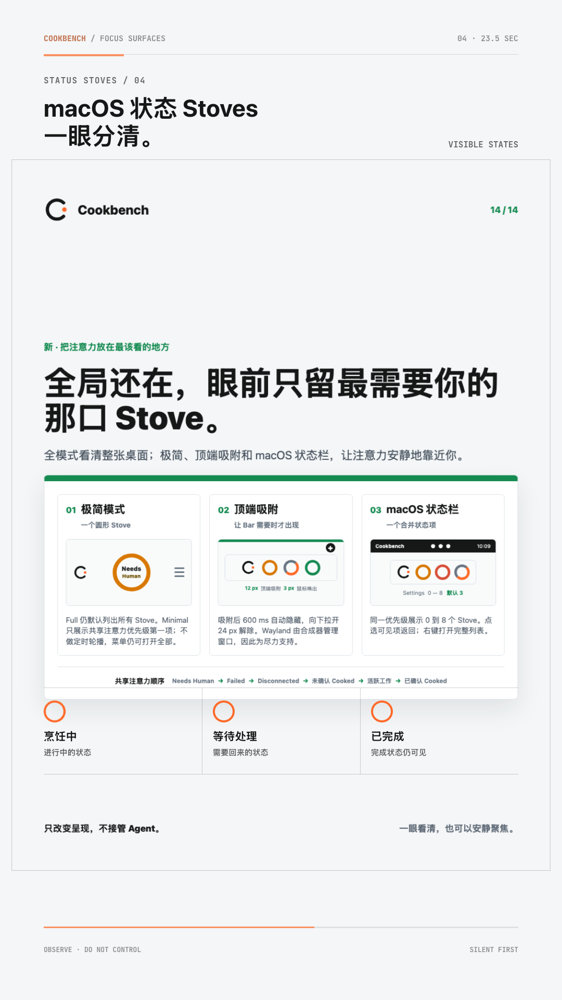
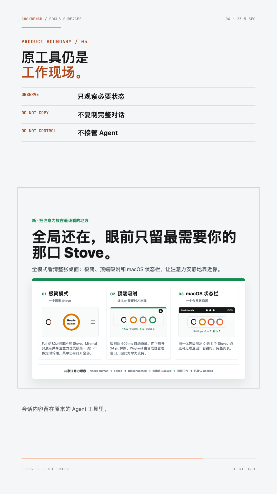
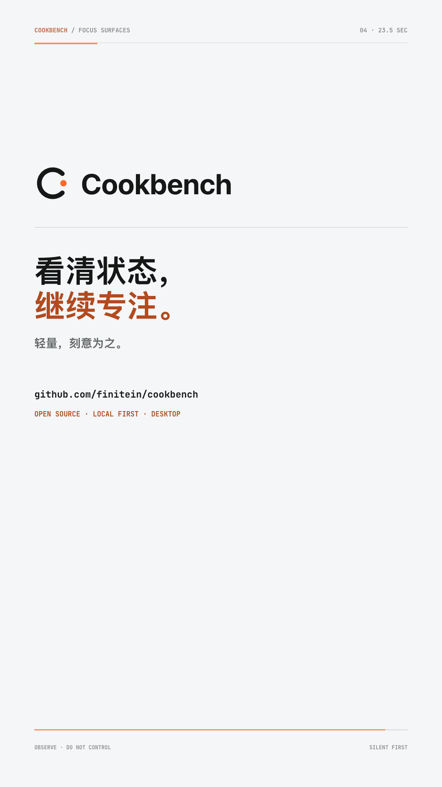

Cookbench 05 / Focus Surfaces / 1080x1920 / 23.5s

01 / CONTEXT SWITCHING / 1.6s

02 / MINIMAL MODE / 4.9s

03 / TOP DOCK / 9.0s

04 / STATUS STOVES / 13.4s

05 / PRODUCT BOUNDARY / 18.2s

06 / BRAND CLOSE / 22.1s